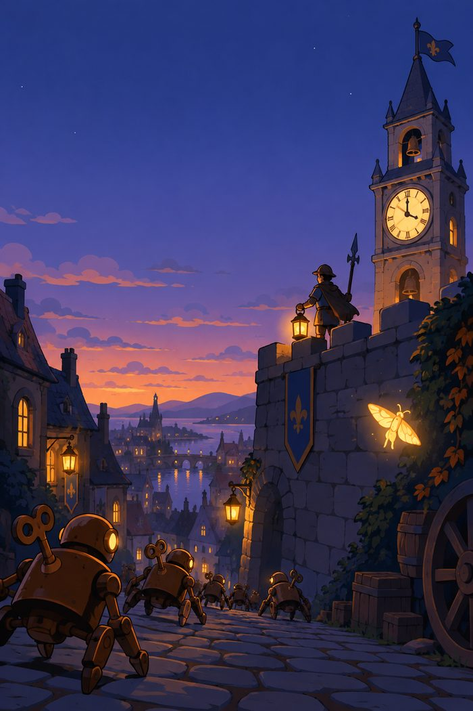
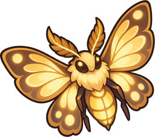
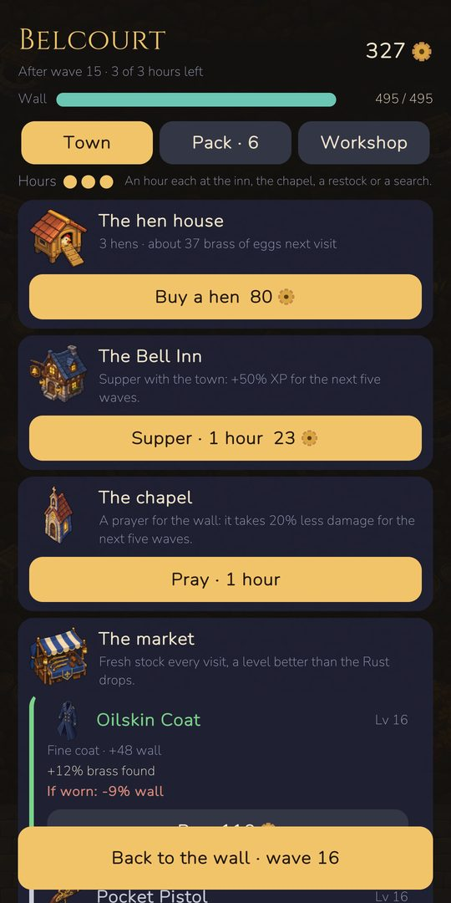
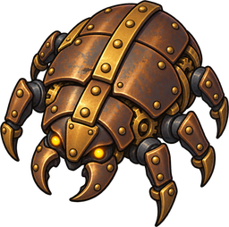
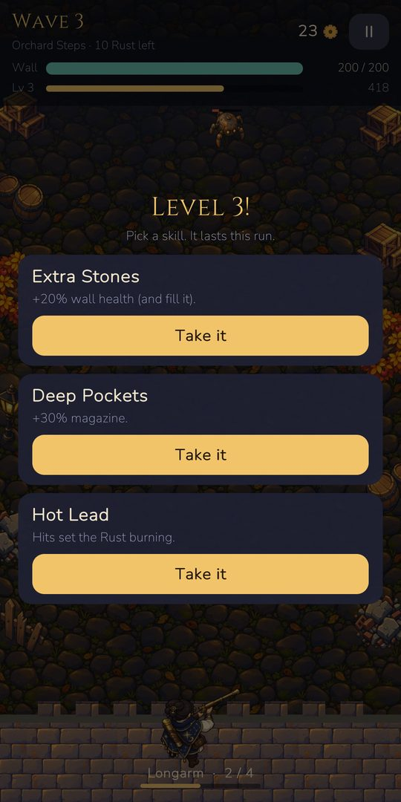
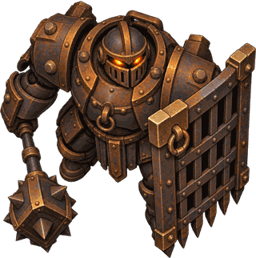

The Belfry Gun
One thumb, one wall, and a hill full of Rust that never stops coming.
- A Run, Start to Finish
- The Gun and the Wall
- Belcourt, Between Waves
- Guns and Loot
- Skills and the Workshop
Note The Belfry Gun is in closed testing. It is not widely released yet, so this section is a teaser: what is in the game today. Details, numbers and features may change before anyone else gets to play.
The one-line pitch
You are the last gunner on the wall of Belcourt, the little town under the great clocktower. The Rust (clockwork creatures, all gears and grudges) comes up the hill in waves that never stop. Aim with your thumb, hold to fire, and keep the wall standing for as long as you can.
Every run starts from nothing: a plain gun and a bare wall. How far can you get?
Why it is fun
- One thumb. Touch and hold anywhere on the field and the gunner aims at your thumb and fires. Lift to stop. That is the whole control scheme.
- Every gun is different. Loot drops from the Rust in seven rarities, each with its own rolled traits, so no two runs play the same.
- Endless, and brutal. The Rust grows tougher faster than your loot does. Losing is the normal ending. The question is always when.
- A town in the middle of the fight. Every five waves you make camp in Belcourt: feed the hens, eat at the inn, pray at the chapel, shop the market, patch the wall.
- Something lasts. Your gun and loot vanish when the wall falls, but medals feed the Belfry's Memory, and milestones unlock new skills, loot and characters.
- A very long goal. Somewhere out there is wave 200.
What is in this section
| Page | What you will find |
|---|---|
| A run, start to finish | How a single run feels from the first shot to the last stone |
| The gun and the wall | Controls, the four starting guns and what the wall does |
| Belcourt, between waves | The town you visit every five waves |
| Guns and loot | Rarities, traits, gear slots and the one-of-a-kind pieces |
| Skills and the workshop | Level-up picks and what brass buys |
| The Rust | Every kind of foe, elites, places and bosses |
| Unlocks and characters | What milestones add and who can stand on the wall |
| The Belfry's Memory | Medals and the permanent upgrades they buy |
| Tips for deeper waves | Habits that add waves |
| FAQ | Quick answers |
Where it happens
Belcourt sits just outside the frozen city of Meridia, in the shared BlairsLab world. Meridia's still skyline can be seen from the hill, and a few faces from the Last Second Workshop have wandered over to help. You never need to have played anything else to enjoy it, and nothing carries between games.

Start here

A Run, Start to Finish
What a single run of The Belfry Gun feels like, from picking a gun to the moment the wall finally falls.

FAQ
Quick answers about the closed test, runs, loot, the Memory, characters and wave 200.
Guides

The Gun and the Wall
How the thumb controls work, how the four starting guns differ, and what the wall does for you.

Belcourt, Between Waves
Every fifth wave the gunner makes camp in Belcourt to wear loot, shop, eat, pray, keep hens and spend brass.

Tips for Deeper Waves
Practical habits that add waves, from reading the Rust to spending brass at camp.
Reference

Guns and Loot
Seven rarities, six gear slots, the traits each can roll and the named one-of-a-kind pieces you might find.

Skills and the Workshop
Level-up skills you pick during a run, and the brass-powered workshop upgrades you buy at camp.

The Rust
Every kind of clockwork foe, the elite twists, the twelve places on the hill and the bosses that guard them.
Unlocks and Characters
The milestones that add variety to every later run, and the sixteen characters who can stand on the wall.

The Belfry's Memory
How medals are earned and the permanent upgrades, keystones and Marching orders they buy between runs.
From the same world
Belcourt sits just outside Meridia's held second. Here is how The Belfry Gun connects to the rest of the BlairsLab world.